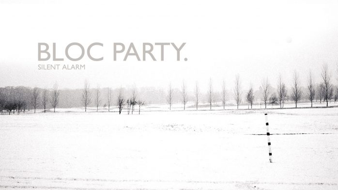

Discography
-
Silent Alarm (2005)

Track Listing
- Like Eating Glass
- Helicopter
- Positive Tension
- Banquet
- Blue Light
- She's Hearing Voices
- This Modern Love
- Pioneers
- Price of Glass
- So Here We Are
- Luno
- Plans
- Compliments
-
A Weekend In The City (2007)
Track Listing
- Song for Clay(Dissapear Here)
- Hunting for Witches
- Waiting for the 7.18
- The Prayer
- Uniform
- On
- Where is Home?
- Kreuzberg
- I Still Remember
- Flux
- Sunday
- SRXT
- Cain Said to Abel
-
Intimacy (2008)
Track Listing
- Ares
- Mercury
- Halo
- Halo
- Trojan Horse
- Signs
- One Month Off
- Zephyrus
- Talons
- Better Than Heaven
- Ion Square